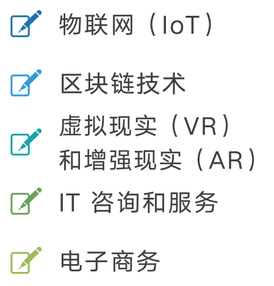

经常有人问：现在还值不值得来日本做 IT？ 一个数字可以回答这个问题：2030 年，日本 IT 人才缺口将达到 79 万人。 这不是估算，这是日本经济产业省的官方预测。
这意味着什么？机会，巨大的机会。 但不是对所有人都是同等的机会。
日本IT都在做什么？

日本 IT 市场涵盖的方向，比很多人想象的要广：
- 软件开发与编程（需求量最大，也最稳定）
- 人工智能与机器学习（增长最快）
- 数据科学与大数据分析
- 云计算（AWS、Azure、GCP）
- 网络与信息安全
- 物联网（IoT）
- 区块链技术
- 虚拟现实（VR）与增强现实（AR）
- IT 咨询与服务
- 电子商务技术
大多数华人 IT 技术者集中在软件开发这一层， 而 AI、云计算、安全等方向的中文人才供给极度稀缺， 这反而是更大的机会所在。
为什么日本IT这么缺人？
原因是结构性的，不是短期波动：
- 技术快速演进：AI、云计算、IoT 同时爆发，人才培养速度跟不上技术迭代
- 教育体系滞后：日本高校的 CS 教育长期偏保守，培养的毕业生数量不足
- 人口结构问题：日本老龄化严峻，劳动年龄人口持续减少，IT 行业首当其冲
- 工作文化壁垒：传统职场文化让外国人才难以进入，导致引进效率低下
- 性别不平等：女性在 IT 行业的参与率偏低，人才池本身就更小
这些问题不是一两年能解决的，也不会因为政策调整而快速消失。 这就是为什么 79 万的缺口是可信的预测，而不是危言耸听。
中日软件开发对比：你的优势在哪里？
中国 IT 人才的优势，在和日本对比时非常显著：
- 技术深度：中国互联网行业的竞争激烈程度远超日本， 很多来日本的华人技术者，技术能力在日本属于中上游，甚至更高
- 价格竞争力：相同技术水平的人，通过派遣进入日本市场， 对客户来说单价往往低于日本本土正社员
- 适应力：有过国内互联网快节奏经历的人，进入日本相对稳定的项目环境， 通常能较快上手
但也有明显的劣势：日语是最大的门槛，也是最大的差异化因素。
什么人来日本，价值增量最高？
结合市场供需来看，以下几类人的价值增量最为明显：
1. 日语 N2 以上 + 主流技术栈（Java/Python）
这是最稳健的组合。能和客户沟通，技术能落地，进入要件定义阶段不存在障碍。
3 年内突破 50 万月薪的概率最高。
2. AI / 数据科学背景
日本 AI 人才极度稀缺，有实际模型训练、数据工程经验的人，
在日本市场几乎处于卖方市场地位。日语要求相对可以弱一些。
3. 云架构 / DevOps 经验者
AWS、Azure 认证加上实际项目经验，在日本能拿到远高于平均水平的单价。
缺口大，竞争小。
4. 有管理 / PMO 经验 + 日语流利
日本 IT 项目最缺的不是码农，而是能说人话、能管协调的人。
这类人才在中国 IT 圈不算稀缺，但在日本是真正的抢手资源。
写在最后
79 万的缺口，不是等着你去填的空白，而是一个仍在扩大的市场。 这个市场不缺初级 CRUD 工程师——这个位置已经供大于求了。 它缺的是有深度的技术者、有视野的管理者、有沟通力的架构师。
来日本做 IT 之前，先想清楚你要占领哪个位置。 位置选对了，这波红利才是真的属于你。